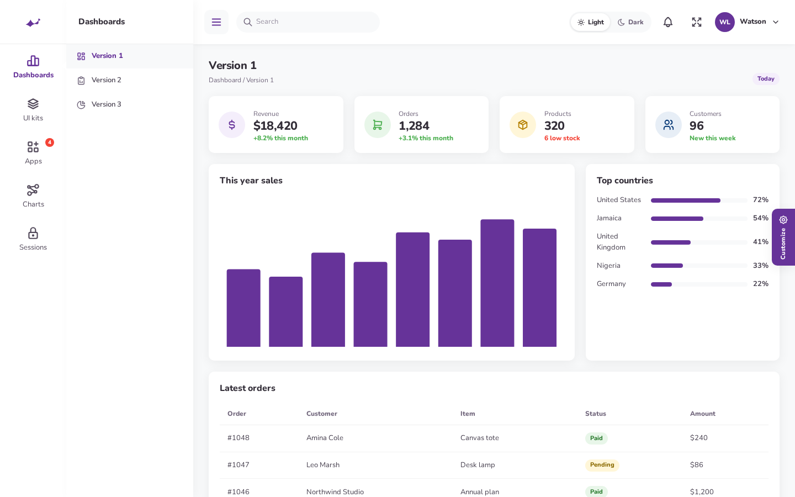
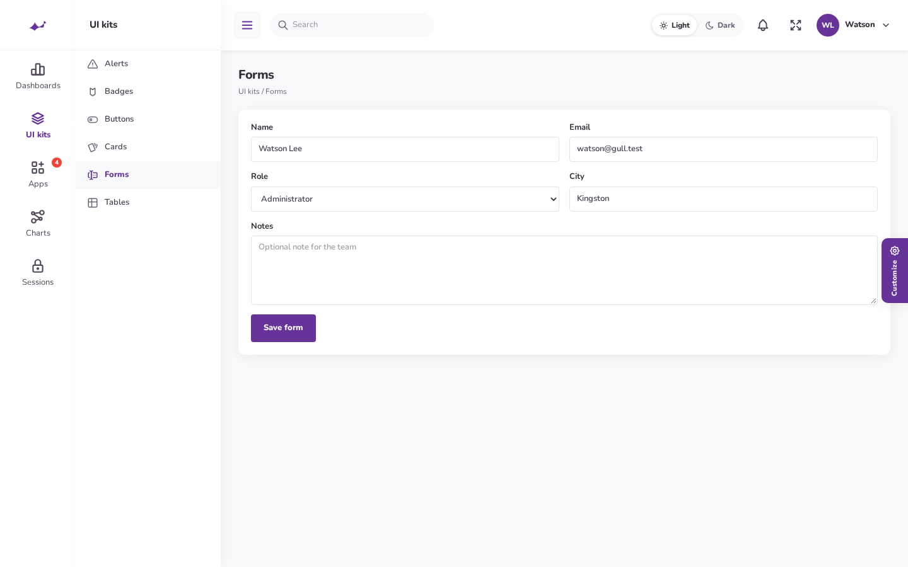

Two menus, one plugin
Compact is the default. Large is a click away. The hamburger on desktop pins the flyout or slides the large sidebar away, instead of using Filament’s own collapse.
Nunito, a #663399 primary, soft 10px cards, and the two menus Gull is known for: a compact icon rail with a flyout, and a large accordion sidebar. Light and dark mode are both first-class.

Look and feel
The page is 13px Nunito. Cards sit on a quiet shadow, 0 4px 20px 1px at 6% black, with a 10px radius. Primary actions and the active rail item use #663399.
| Layout | How the menu works |
|---|---|
| Compact | A 120px rail. Each parent is a Tabler icon with a label under it. Hover opens a 230px white flyout. Click pins it. A triangle marks the open section. |
| Large | A 260px sidebar. Section labels are uppercase. Items accordion in place, icon then label. |
| Phone | Both layouts become an off-canvas drawer with a dimmed backdrop. Targets are at least 44px. Compact keeps the icon rail and shows children beside it. |


Features
Compact is the default. Large is a click away. The hamburger on desktop pins the flyout or slides the large sidebar away, instead of using Filament’s own collapse.
Outline icons from the same 24×24 grid. 26px on the rail, 18px in the flyout, 20px in the large sidebar, 22px in the top bar.
A Light / Dark switch sits in the top bar. It is also on the sign-in screen and in Customize. Stored as gull-mode.
Light, purple, midnight, indigo, pink, slate, and gradient. Stored as gull-skin. Set customizer to false to hide the gear tab.
Tables, alerts, buttons, badges, cards, and forms keep Filament behavior and pick up the Nunito type, purple primary, and soft cards.
CSS and a small menu script load through Filament render hooks. Register the plugin and the chrome is there.




Install
PHP 8.2 or newer. Laravel 11, 12, or 13. Filament 4 or 5. The same plugin class works on both.
1. Require the package and Tabler icons
composer require gull/filament-theme
composer require secondnetwork/blade-tabler-icons
php artisan vendor:publish --tag=filament-gull-theme-config2. Add it to the panel
use Gull\FilamentTheme\GullThemePlugin;
$panel->plugin(GullThemePlugin::make());Layout and skin defaults live in config/filament-gull-theme.php. Visitors can still switch them. GULL_LAYOUT is compact or large. GULL_SIDEBAR is one of the skins below.
The parent NavigationItem has a URL. Leave the URL off parents that should open children. Gull::parent() does this for you.
A navigation group and its items cannot both have icons. Leave the group icon off. Put icons on the parent and on each child.
In the browser, under gull-mode. Layout is gull-layout. Sidebar skin is gull-skin. Nothing is written to the database.